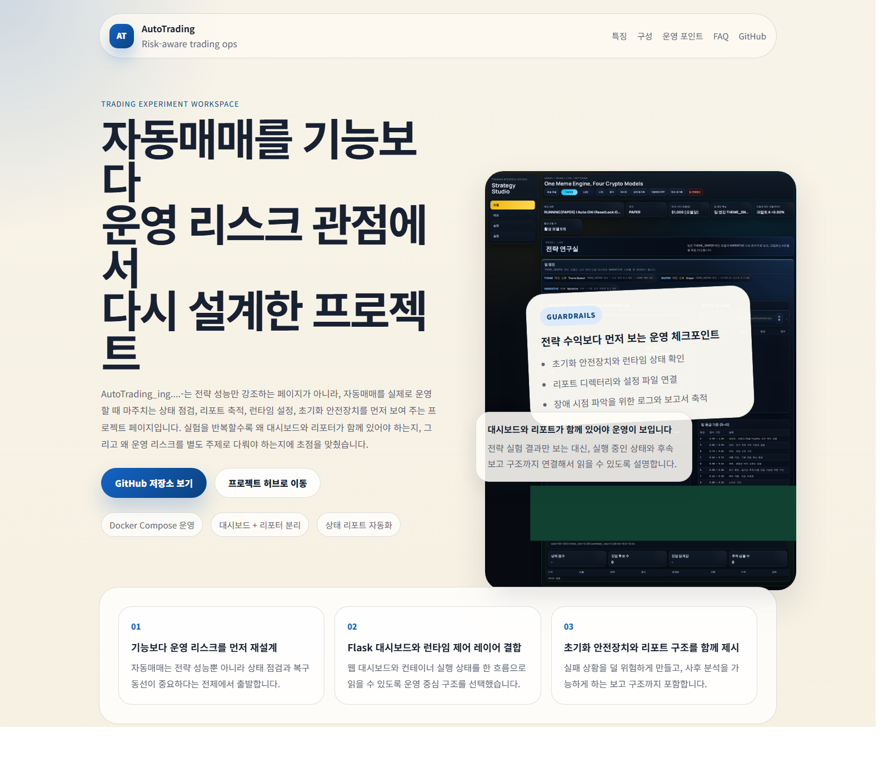

유동성과 체결 안정성이 높은 메이저 심볼만 다룹니다.
Operator-first automation
운영 기준이 분명한 futures demo 자동매매 콘솔
AI_Auto는 Top 5 메이저 코인을 대상으로 8분 배치 futures demo를 운영하는 자동매매 프로젝트입니다. 개요, 모델 성과, 포지션, 설정을 분리해 상태 확인과 운영 입력이 서로 섞이지 않도록 정리했습니다.
코드, 설정 기준, 운영 문서는 GitHub 저장소 와 GitHub Wiki 에서 바로 확인할 수 있습니다.
- 개요 / 모델 성과 / 포지션 / 설정
- Top 5 메이저 코인
- 8분 주기 배치 분석
- futures demo / intrabar 체결 반영

상시 루프 대신 운영 가능한 배치 주기로 정리했습니다.
일별 손익 기록과 주간 autotune을 운영 루프에 포함합니다.
provider 키와 runtime profile을 운영 화면에서 분리 관리합니다.
왜 재구성했나
상태 확인과 설정 입력을 분리해야 운영이 편해집니다.
운영 상태 확인, 성과 비교, 포지션 점검, 설정 입력은 같은 화면에서 같은 밀도로 보여줄 필요가 없습니다.
지표를 보다가 설정 폼을 마주치는 구조는 판단을 느리게 만듭니다. 그래서 화면을 기능별로 나눴습니다.
GitHub Pages는 프로젝트 소개와 진입점에 집중하고, 실제 운영 기준은 콘솔과 Wiki에 모았습니다.
화면 구조
운영자 기준으로 정리한 4개 화면 구조
핵심 KPI, heartbeat, 최근 사이클 요약, 오픈 포지션 수를 먼저 보여줍니다.
모델별 PnL, 승률, 종료 거래 수, autotune 상태를 비교합니다.
오픈 포지션, 최신 setup, entry / SL / TP 상태를 실행 기준으로 정리합니다.
Service control, provider vault, execution target, runtime profile은 설정 화면에만 둡니다.
화면 분위기
과한 소개보다 운영 도구처럼 보이도록 다듬었습니다.

검은 배경, 민트와 시안 포인트, 데이터 패널 중심 레이아웃을 사용했습니다. 한 화면에 모든 것을 넣기보다 읽는 흐름이 끊기지 않도록 타이포와 간격을 정리했습니다.
- 페이지별 책임 분리
- 데이터 카드와 표 중심 레이아웃
- 설정 입력은 별도 화면으로 격리
모델 운영
4개 planner 모델이 진입과 청산 계획을 제안합니다.
되돌림과 평균 회귀 구간을 중심으로 entry와 stop 구조를 계산합니다.
스윕 후 회복되는 패턴에서 reclaim 기준의 진입 계획을 만듭니다.
변동성 수축 이후 breakout retest를 기준으로 목표 구간을 설정합니다.
실패한 돌파 이후 반대 방향으로 복귀하는 구간을 활용합니다.
배포 구조
프론트, 저장소, 배치를 분리해 운영합니다.
운영자 콘솔과 Service control 화면을 제공합니다.
상태 저장, runtime profile, provider vault, 대시보드 원장을 담당합니다.
8분 분석, intrabar 체결 판정, 일별 리포트, 주간 autotune 작업을 처리합니다.
참고
상세 문서는 GitHub 저장소와 Wiki를 기준으로 관리합니다.
프로젝트 개요는 이 페이지에 남기고, 실제 운영 기준과 설정 절차, 배포 참고 문서는 GitHub 저장소와 Wiki에 모아둡니다. 최신 코드, 변경 이력, 설정 문서가 필요할 때는 GitHub 저장소 와 GitHub Wiki 를 함께 확인하면 됩니다.